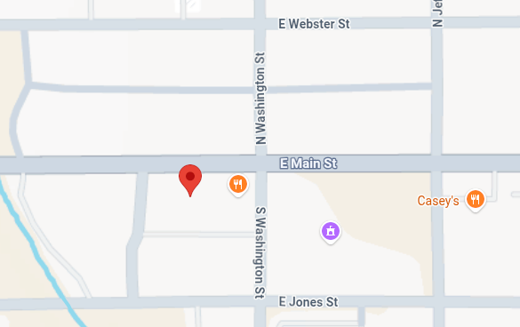

Located inside the historic Hotel Williams 1878-1932, on Main Street, Wyoming, Iowa, the Wyoming Historical Museum was established in 1988.
Three floors of exhibits and rooms house over 5,000 artifacts and photos.
1st Floor: Drugstore, Parlor, Genealogy, Maps
2nd Floor: 14 Rooms with different themes
Full Basement: Farm related items
POST OFFICE ANNEX NEXT DOOR TO THE EAST
Military, Early Postal Artifacts, Printing Presses and Equipment
